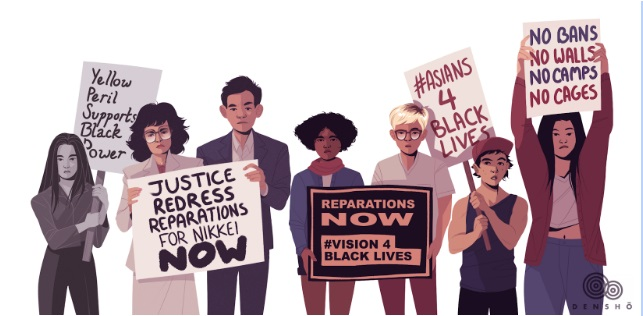
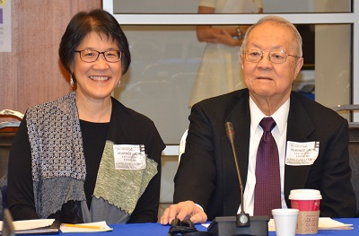
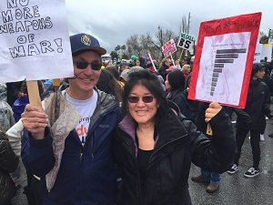
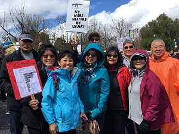
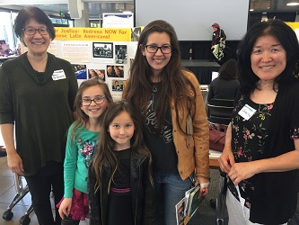
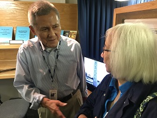
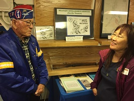
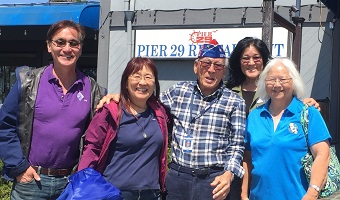
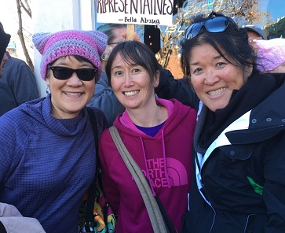
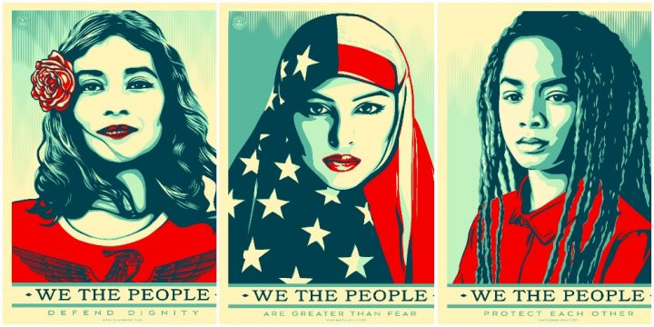

|
|
|

|
| Art
by Kiku Hughes |
| |
August 10, 2018 marks the 30th
anniversary of the passing of
the
Civil Liberties Act of 1988,
the historic legislation that
mandated both an official
apology and monetary
compensation to those of
Japanese ancestry forcibly
expelled from their homes and
subjected to mass
incarceration behind barbed
wire under
Executive Order 9066. This
victory required decades of
struggle by a united Japanese
American community fighting in
the courts, in Congress, and
in the court of public
opinion. In continuation of
this legacy,
Nikkei Progressives (LA)
and
Nikkei Resisters (SF/Bay
Area) are excited to announce
our
#NeverAgainIsNow campaign
with the support of a national
network of Japanese Americans
who are ready to honor this
anniversary with action.
The
WWII incarceration of Japanese
Americans inspires us today to
fight to defend the civil
liberties of many people from
the racist and inhumane
policies of the Trump
administration. We see Muslims
being banned from entering the
country, children being torn
from their parents at the
border, and families being
held in indefinite detention
-- the parallels with our
history are vividly clear. In
the name of our parents,
grandparents and great
grandparents, we vow Never
Again!
But
our people�s history contains
more than barbed wire camps
and searchlights. It contains
resistance to the
unconstitutional Executive
Order, legal challenges to the
exclusion orders, general
strikes and civil disobedience
by those refusing to answer
the loyalty oath and to comply
with draft orders. Our history
of struggle goes beyond the
concentration camps � from the
fight to win citizenship
rights for the first
generation Issei to the Civil
Rights Movement; from the
struggle for Ethnic Studies
and the Asian American
Movement to protests against
Trump�s cruel �zero tolerance�
policy and recent protests
against the Muslim Ban.
Recognizing our history,
Nikkei Resisters and Nikkei
Progressives formed to unite
Japanese Americans to take
action in vigorous defense of
civil liberties and in the
fight for social justice.
Read more on what you can
do... |
|
|
Art
Shibayama
1930-2018 |
|
|
|
|
Photo by Andy Frazer |
|
|
The
Nihonmachi Outreach Committee
celebrates the life of Art Shibayama.
Art was a wonderful man who
courageously fought for justice for
Japanese Latin Americans who were
forcibly taken from their homes and
imprisoned in the United States.Art
spoke at several NOC events and was a
strong voice for social justice. His
daughter, Bekki Shibayama, wrote the
following article for the 2018 San
Jose Day of Remembrance. |
Speak Out
For Justice
The
shocking story about
the United
States government's
abduction
of Japanese Latin Americans
By Bekki
Shibayama |
|
 |
| |
|
Bekki and Art Shibayama at the
Inter-American Commission on Human Rights hearing |
My father,
Art Shibayama, was a 13-year old
Peruvian citizen when he and his
family were seized from their home in
Lima during WWII. They were shipped
across international waters on a U.S.
Army transport and imprisoned as
�potentially dangerous enemy aliens�
in a Department of Justice
concentration camp in the U.S. Yet
their only "crime" was that they were
of Japanese descent. The U.S.
government planned to exchange them
for U.S. citizens trapped in Japan.
My
father and his family were still
detained in Crystal City when the war
ended and the U.S. government
classified them as �illegal aliens.�
When Peru would not allow those of
Japanese ancestry to return home, they
were rendered stateless. They fought
deportation for over a decade until
they were able to obtain U.S.
permanent residency.
Read More...
For more
informatoin, visit the
Campaign For Justice website.
Call To Action:
Please sign
our petition requesting a favorable
ruling from the
Inter-American Commission on Human
Rights (IACHR):
https://www.change.org/p/inter-american-commission-on-human-rights-justice-now-for-the-shibayama-brothers. |
|
|
|
|
|
|
Past Events |
|
|
|
|
We refuse to
accept gun violence as an unsolvable
issue. Now it�s time to turn our
energy into action.
Visit:
marchforourlives.com |
|
|
|
 |
 |
|
|
Faces of
Genocide Symposium
Social Justice Fair
April 12, 2018 |
 |
|
|
|
|
|
|
|
 |
 |
|
|
 |
Brian Shiroyama and Lawson Sakai gave a
wonderful tour of the 442/MIS exhibit
in the USS Hornet. |
|
|
|
San Jose Women's March |
|
|
|
 |
Left: NOC members at
the 2018 San Jose Women's March |
|
|
|
|
 |
|
|
We The People image created by Shepard Fairey.
Amplfier
Foundation. |
|
|
|
|
|